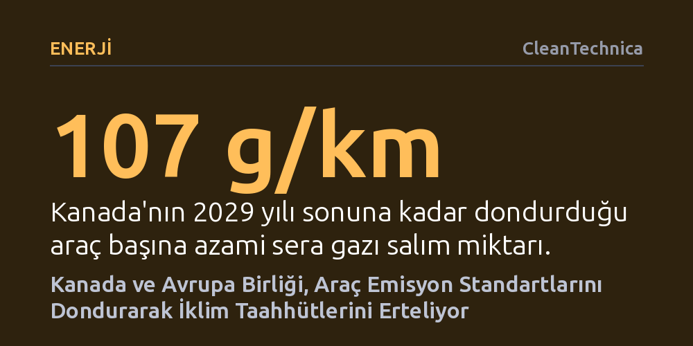

ENERJI · CleanTechnica · 2026-10-26
Kanada araç emisyon standartlarını üç yıl dondururken, Avrupa Birliği de 2035 sıfır emisyon hedefini esnetmeye hazırlanıyor. İki taraf da siyasi ve ekonomik baskıları gerekçe göstererek temiz ulaşıma geçiş taahhütlerinden fiilen geri adım atıyor.
İklim krizine karşı verilen iddialı sözlerin, ekonomik baskılar ve sanayi lobileri karşısında hükümetler tarafından ne kadar hızlı ertelenebildiğini gösteriyor.

Dünya genelinde hükümetler 2030, 2050 veya daha ileri tarihler için karbon emisyonlarını sıfırlama vaatlerinde bulunsa da, somut adımlar atma sırası geldiğinde bu vaatler kolayca rafa kaldırılabiliyor. Son gelişmeler, hem Kanada'nın hem de Avrupa Birliği'nin motorlu araç emisyonlarını düşürme taahhütlerinden geri adım attığını gösteriyor. Her iki yönetim de hedefleri tamamen terk etmediklerini, yalnızca mevcut ekonomik ve siyasi dalgalanmalar nedeniyle ertelediklerini savunuyor.
Bu geri adımların merkezinde, yükselen hayat pahalılığı, aşırı sağ siyasi hareketlerin hükümetler üzerindeki baskısı ve otomotiv sektörünün geçiş sürecinde zorlanması yer alıyor. Ancak küresel ısınmanın yarattığı tehdit her geçen gün büyürken, verilen sözlerin ötelenmesi küresel iklim mücadelesinde ciddi bir güven erozyonuna yol açıyor.
Kanada hükümeti, araç başına izin verilen sera gazı emisyon standartlarını üç yıl boyunca dondurduğunu duyurdu. Mevcut kural uyarınca araç başına mil başına 172 gram (kilometre başına 107 gram) olan emisyon üst sınırı, 2029 yılı sonuna kadar aynı seviyede tutulacak. Normal şartlarda kademeli olarak mil başına 74 grama indirilmesi öngörülen standartların ertelenmesi, fosil yakıtlı araçların piyasada daha uzun süre kalmasına zemin hazırlıyor.
Başbakan Mark Carney ve Ontario Başbakanı Doug Ford tarafından yapılan ortak açıklamada, bu esnekliğin otomotiv üreticilerine ticaret baskıları karşısında nefes aldıracağı ifade edildi. Kararın yanında, federal ve eyalet hükümetleri Kanada otomotiv üreticilerinin sermaye projelerini desteklemek amacıyla iki yıl için 2,5 milyar dolarlık bir yatırım paketi açıkladı. Yerli üreticiler kararı istihdamı koruyacağı gerekçesiyle memnuniyetle karşılarken, iklim savunucuları elektrikli araçlara dönüşümün baltalandığını savunuyor.
Avrupa Birliği cephesinde ise 27 üye ülkenin ve farklı siyasi partilerin uzlaşmasını gerektiren karmaşık bir pazarlık süreci işliyor. 2035 yılına kadar sıfır emisyonlu araçlara geçiş kuralını esnetmek isteyen üreticilerin çağrıları, Fransa ve Almanya'nın ardından Avrupa Parlamentosu'ndaki merkez partilerde de karşılık buldu.
Almanya'dan gelen bilgilere göre partiler, üreticilerin araç yapımında en az yüzde 7,5 oranında 'yeşil çelik' kullanması şartıyla, yüzde 100 olan emisyon azaltma hedefinin yüzde 87,5 seviyesine çekilmesinde uzlaştı. Bu formül, 2035'te sıfır emisyonlu araç satış oranının fiilen yüzde 95'e düşürülmesi anlamına geliyor. Paketin yasalaşması için önce Avrupa Parlamentosu Çevre Komitesi'nden ve Genel Kurulu'ndan, ardından da AB Konseyi'ndeki nitelikli çoğunluk oylamasından geçmesi gerekiyor.
Yaşanan bu süreç, ekonomik ve jeopolitik sıkışmışlık anlarında uzun vadeli iklim hedeflerinin nasıl kolayca feda edilebildiğini açıkça ortaya koyuyor. Otomotiv sektöründeki istihdamın ve sermaye birikiminin korunması elbette hükümetler açısından kritik bir öncelik; fakat doğa yasaları siyasi takvimlere veya piyasa şartlarına göre işlemiyor.
Yazıda belirtildiği gibi, hedefe yaklaştıkça frene basmak ve sürekli erteleme yolunu seçmek, yaklaşan ekolojik krizin faturasını ağırlaştırıyor. Sanayiyi korumak adına verilen bu tavizler, iklim krizinin geri döndürülemez eşikleri aşıldığında korunacak bir pazarın veya istihdamın kalmayacağı gerçeğini gölgeleyemiyor.